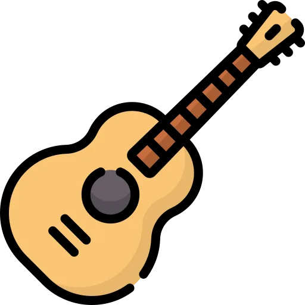

Hennings neue App: Ich lerne Noten lesen

Ich lerne Noten lesen! Henning hat eine neue App entwickelt, mit der ich spielerisch das Notenlesen übe. Hier schreibe ich demnächst mehr über meine Fortschritte und erste Songs.
Ich spiele Gitarre, Klavier und vielleicht auch mal wieder Ukulele. Im letzten Jahr ist auch eine E-Gitarre dazu gekommen. Hier halte ich alles rund um das Thema Musik fest und es gibt bestimmt auch die ein oder andere Kostprobe.

Ich lerne Noten lesen! Henning hat eine neue App entwickelt, mit der ich spielerisch das Notenlesen übe. Hier schreibe ich demnächst mehr über meine Fortschritte und erste Songs.